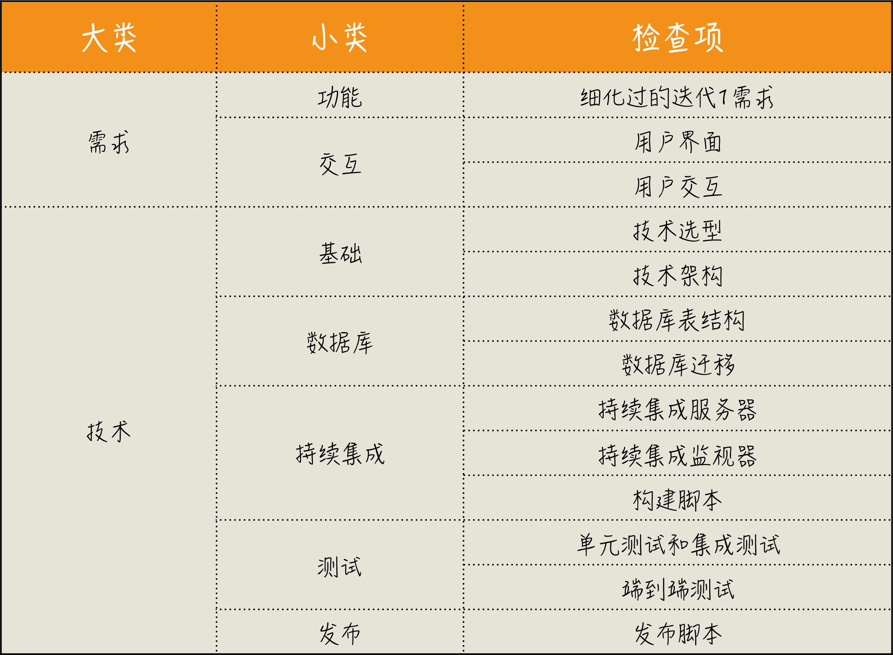
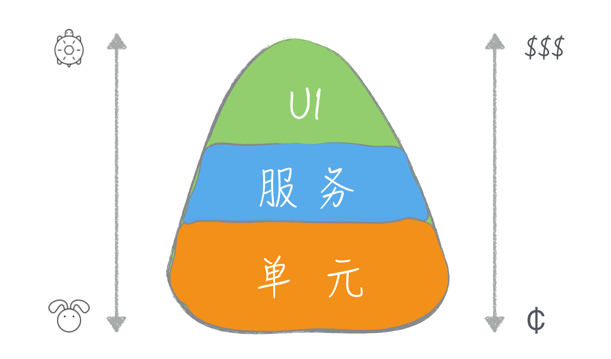
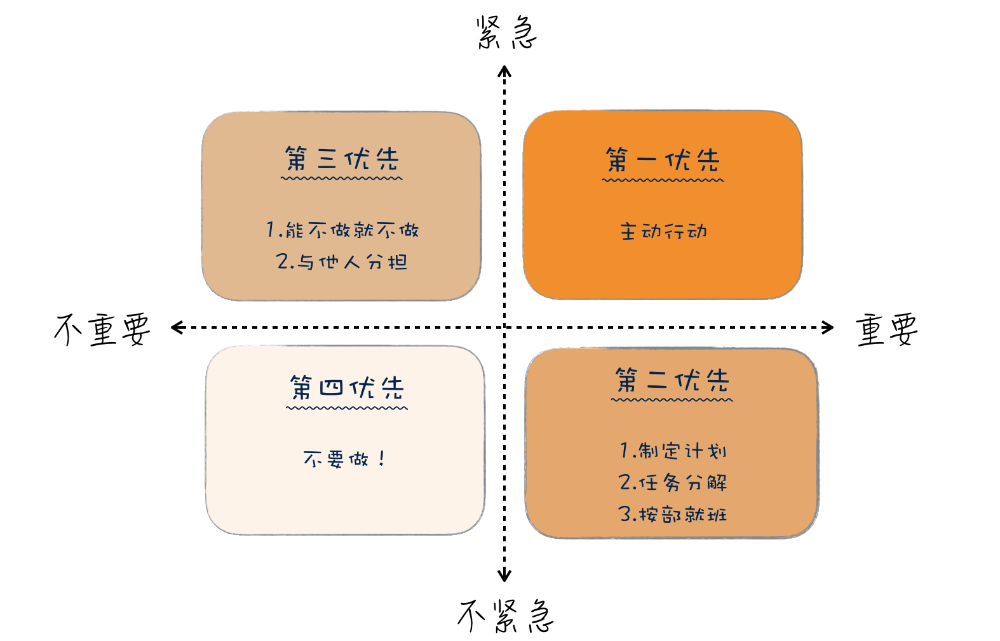
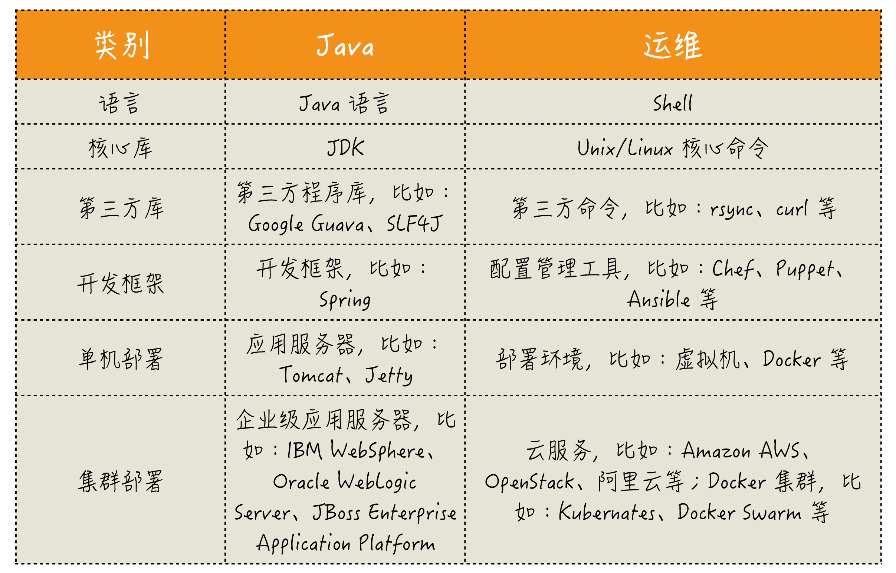
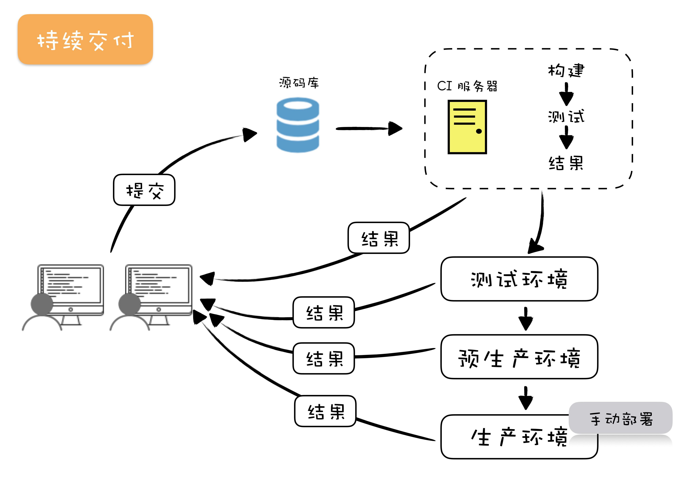
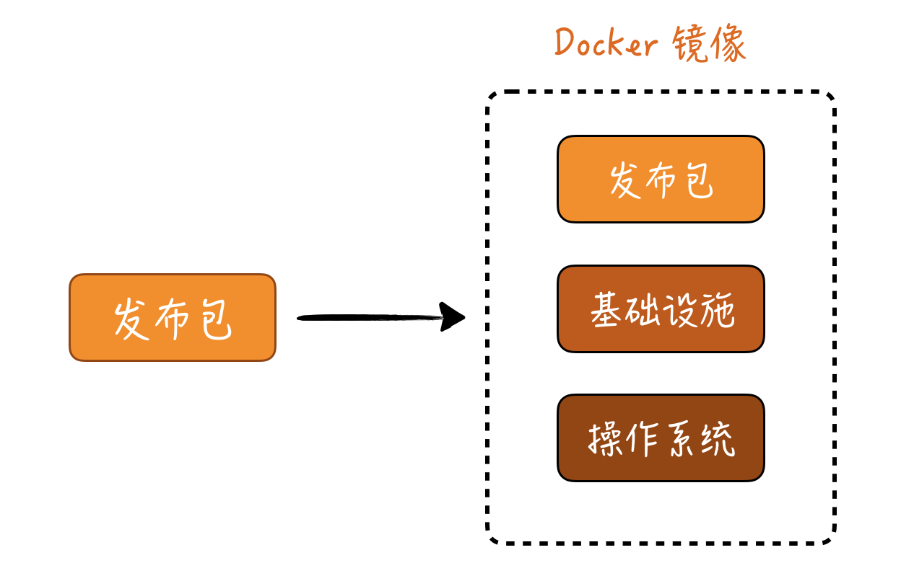
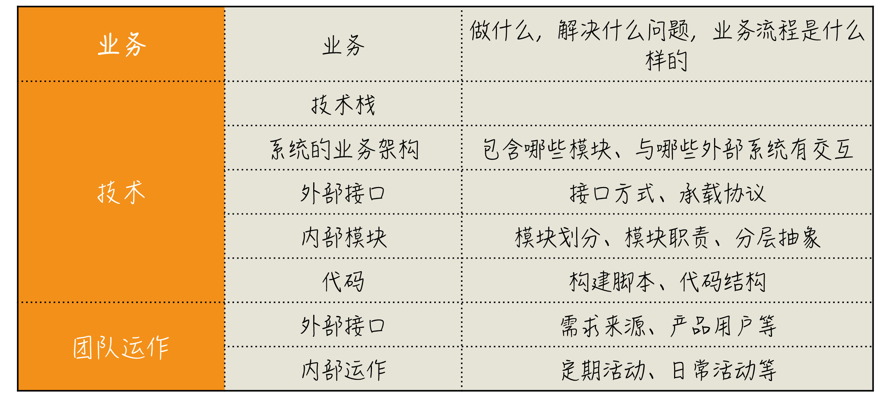

10x程序员工作法¶
- Date
2021-02-22 00:05:35
10x程序员工作法-郑晔-极客时间 其中每章总结和总复习可用于构建对应的知识体系。
高效工作：能用尽可能小的时间颗粒度来安排自己的工作。十五分钟？五分钟？
四项原则¶
本质复杂度（Essential Complexity）和偶然复杂度（Accident Complexity）。
以终为始就是在工作的一开始就确定好自己的目标。我们需要看到的是真正的目标，而不是把别人交代给我们的工作当作目标。你可以看出这个原则是在帮助我们回答思考框架中，Where are we going?（我们要到哪儿去？）这个问题。
任务分解是将大目标拆分成一个一个可行的执行任务，工作分解得越细致，我们便越能更好地掌控工作，它是帮助我们回答思维框架中，How can we get there?（我们如何到达那里？）的问题。
沟通反馈是为了疏通与其他人交互的渠道。一方面，我们保证信息能够传达出去，减少因为理解偏差造成的工作疏漏；另一方面，也要保证我们能够准确接收外部信息，以免因为自我感觉良好，阻碍了进步。
自动化就是将繁琐的工作通过自动化的方式交给机器执行，这是我们程序员本职工作的一部分，我们擅长的是为其他人打造自动化的服务，但自己的工作却应用得不够，这也是我们工作中最值得优化的部分。
以终为始¶
DOD 在做任何事情之前，先确定完成的标准。 DoD 是团队成员间彼此汇报的一种机制。 DOD是一个检查项清单，用于检查工作是否完成，只有完成和未完成两个状态，不存在完成了80%这样的状态。
用户故事与验收标准 采用用户故事的格式进行需求描述固或，在功能列表中使用验收标准。验收标准给出了这个需求最基本的测试用例。 验收标准非常重要的一环是异常流程的描述。
工作上下文 不同角色工作上真正的差异是上下文的不同。 扩大自己工作的上下文，别把自己局限在一个“程序员”的角色上。
事先推演 我们的工作，多数情况下，即便目标清晰，路径却是模糊的。 在动手做一件事之前，先推演一番。
数据思维
精益创业，减少过度开发不确定性产品带来的浪费。
迭代 0 在项目开始之前，做好一些基础准备。 
任务分解¶
可执行的、小粒度的任务分解；便于任务量估算 安装完整实现一个需求的顺序去安排分解出来的任务。每做完一个任务，代码都是可以提交的。
测试金字塔  越是底层的测试，牵扯到相关内容越少，成本越低，执行越快；而高层测试则涉及面更广。
TDD TDD 的节奏：“红 - 绿 - 重构”。编写可测试的代码。 测试先行开发和测试驱动开发的差异就在重构上。
 极限编程之所以叫“极限”，它背后的理念就是把好的实践推向极限。
极限编程之所以叫“极限”，它背后的理念就是把好的实践推向极限。写简单的测试 前置准备、执行、断言和清理。 A-TRIP:
Automatic，自动化；
Thorough，全面的；
Repeatable，可重复的；
Independent，独立的；
Professional，专业的。
需求分解与用户故事 需求分解。绝大多数问题都是由于分解的粒度太大造成的，少有因为粒度太小而出问题的。 需求拆分为细小的为用户故事，便于管理。 评价用户故事的INVEST原则：
Independent：独立的
Negotiable：可协商的
Valuable：有价值的
Estimable：可估算的
Small:小
Testable：可测试的。
需求优先级 艾森豪威尔矩阵（Eisenhower Matrix）  按照时间管理的理念，
重要且紧急的事情要立即做。
重要但不紧急的事情应该是我们重点投入精力的地方。
紧急但不重要的事情，可以委托别人做。
不重要不紧急的事情，尽量少做。 如果不把精力放在重要的事情上，到最后可能都变成紧急的事情。
最小可行产品MVP 产品开发同样需要分解，精益创业就包含了将庞大的产品分而治之的方式：Minimum Viable Product，MVP。 想要在实践中运用好最小可行产品的理念，就是要用最小的代价找到一条可行的路径。
沟通反馈¶
信息论视角
 每个人经历见识的差异，造成了各自编解码器的差异。
每个人经历见识的差异，造成了各自编解码器的差异。不同角色间的沟通：克服上下文差异，分段解码，理解偏差早发现早反馈。
相同角色间的沟通: 信号相同，解码能力因人而异，要有一个主导的人，控制沟通广度与深度，抓主线适可而止，此时结合任务分解，反向沙盘推演。
用业务语言写代码 领域驱动设计（Domain Driven Design，DDD）。把不同的概念分解出来，这其实是限界上下文（Bounded Context）的作用，而在代码里尽可能使用业务语言，这是通用语言（Ubiquitous Language）的作用。
轻量级沟通 多面对面沟通，少开会。 站会：
我昨天做了什么？是为了与其他人同步进展，看事情是否在计划上。
我今天打算做什么？是同步你接下来的工作安排，可能涉及到与其他人协作。
我在过程中遇到了什么问题，需要请求帮助。 就是与其他人的协作。 关于站会，有一个典型的错误是，有些团队把站会开成了汇报会。项目负责人指定一个个轮流发言，说的人都向负责人在汇报工作，其他人自然就容易走神了，因为事情与己无关。 沟通的指导原则之一就是在同步沟通的时候（比如开会），人越少越好。而在异步沟通的时候（比如E-mail），涉及的听众越多越好。 亚马逊 CEO Jeff Bezos 透露了亚马逊内部的一个独特规则——召开员工会议时拒绝使用 PPT。召开员工会议前，与会者需要在会场静读 30 分钟会议相关文件。“我们的会议以自习课开场，”Jeff Bezos 如是解释道。
可视化 多尝试用可视化的方式进行沟通。 雷达图、UML、流程图、看板等。 关注新技术，网站/论坛（InfoQ/ThougtWorks/OsChina）；试验新技术，以 Spike 为主；深入学习，以阅读文档为主 > TODO：创建自己的读书雷达图 build-your-own-radar
做好持续集成的关键在于快速反馈。 持续集成的价值在于，它是一条主线，可以将诸多实践贯穿起来。 想要做好 CI，最好采用主开发分支的方式;想用好主分支开发，最好能够频繁提交；而频繁提交需要你的任务足够小，能够快速完成；将任务拆解的足够小，需要你真正懂得任务分解。要想在一个分支上开发多个功能，那就需要用 Feature Toggle 或者 Branch by Abstraction。
复盘 枚举关注点，选出重点，深入讨论，列出行动项，找到负责人。 5个为什么:沿着一条主线追问多个问题.
聆听用户的声音 用户角度与逻辑推演的角度的差异。 做自己的用户/接近用户/创造用户。 谁离用户近，谁就有发言权，无论你的角色是什么。
尽早暴露问题 不是所有的问题，都是值得解决的技术难题。 遇到问题，最好的解决方案是尽早把问题暴露出来。 A system that fails fast does exactly the op- posite: when a problem occurs, it fails imme- diately and visibly.
写文档 将零散的知识结构化。输出的过程，本质上就是把知识连接起来的过程。 构建自己的知识结构，提高对新知识的接收效率。 金字塔原理的四个基本原则：
结论先行:一次表达只支持一个思想，且出现在开头;
以上统下:任一层次上的思想都必须是其下一层思想的总结概括;
归类分组:每组中的思想都必须属于同一范畴;
逻辑递进:每组中的思想都必须按照逻辑顺序排列; 前面两个特点是纵向结构之间的特点，后面两个特点则是横向结构之间的特点。
自动化¶
三大美德 Laziness, Impatience and Hubris 技术人员普遍存在的问题：NIH 综合症（Not Invented Here Syndrome），即看不起别人做的东西。 分清出设计与技术。
运维知识体系  DevOps 技术栈 >自动化部署工具：Chef、Puppet、Ansible ？？
持续交付 DevOps 和持续交付是相辅相成的，二者在部署自动化是重叠的。  如果把由人决定的是否上线变成自动化的，就成了另外一个实践：持续部署。 基础设施即代码（Infrastructure as code）。 
验收测试 Acceptance Testing，是确认应用是否满足设计规范的测试。 行为驱动开发：其中的行为，指的是业务行为。BDD 希望促进业务人员与开发团队之间的协作，即关键点在用业务视角描述。
设计原则 《敏捷软件开发：原则、实践与模式》这本书中，比较完整地阐述了这五个原则。 如果说设计模式是“术”，设计原则才是“道”。设计模式并不能帮你建立起知识体系，而设计原则可以。《设计模式》不推荐阅读，《Head First 设计模式》更容易入门。 SOLID 5原则：
单一职责原则（Single responsibility principle，SRP）
开放封闭原则（Open–closed principle，OCP）
Liskov 替换原则（Liskov substitution principle，LSP）
接口隔离原则（Interface segregation principle，ISP）
依赖倒置原则（Dependency inversion principle，DIP）
《敏捷软件开发：原则、实践与模式》
分层抽象的思想 分层架构，实际上，就是一种在设计上的分解，构建出一个良好的抽象。 Java 服务端应用的三层结构：
数据访问层，按照传统的说法，叫 DAO（Data Access Object，数据访问对象），按照领域驱动开发的术语，称之为 Repository；
服务层，提供应用服务；
资源层，提供对外访问的资源，采用传统做法就是 Controller。
使用合适的技术 用简单技术解决问题，直到问题变复杂。 不同量级的系统根本就不是一个系统。
DDD与微服务 ><《领域驱动设计精粹》
重构 函数式编程已然成为时代的主流。 函数式编程：是一种抽象程度很高的编程范式，纯粹的函数式编程语言编写的函数没有变量。因此，任意一个函数，只要输入是确定的，输出就是确定的，这种纯函数我们称之为没有副作用。而允许使用变量的程序设计语言，由于函数内部的变量状态不确定，同样的输入，可能得到不同的输出，因此，这种函数是有副作用的。 函数式编程的一个特点就是，允许把函 数本身作为参数传入另一个函数，还允许返回一个函数。 >《重构》
其它 如IDEA快捷键学习
综合运用¶
熟悉新团队 三个维度：业务、技术和团队。 了解一个项目，要从大图景开始。 
改造遗留系统
保持竞争力 一专多能。 在学习区工作和成长。保持知识分享与输出。